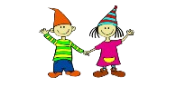

Rooftop
Unser Dachbereich bietet eine tolle Aussicht und viel Platz für Anlässe.
Spielgruppe Zwergmühle
Die Spielgruppe „Zwergmühle“ ist eine privat geführte Institution und wird vom Quartierverein Webermühle getragen. Die ausgebildeten Spielgruppenleiterinnen betreuen die Kinder in einer konstanten Gruppe von max. 7–8 Kindern (ab 2,5 Jahren bis Kindergarteneintritt) regelmässig zweimal pro Woche für 2 Stunden.
Spielzeit: Montag und Donnerstag 09.00 – 11.00 Uhr
Ort: Webermühle 23/EG
Neu: Sollte Ihr Kind vielleicht erst auf dem Weg zum „Trocken werden“ sein, so ist dies kein Grund, nicht die Spielgruppe zu besuchen. In diesem Fall informieren Sie die Spielgruppenleiterin und geben dem Kind einfach die Windeln mit.
Das Anmeldeformular kann unter esiino@hotmail.com angefordert werden oder telefonisch bei:
Sandra Adamovic: 076 404 06 85
Adresse:
Zwergmühle Spielgruppe
Webermühle 23
5432 Neuenhof
esiino@hotmail.com
Fitnessraum

Spielgruppe Zwergmühle

Sommerfest
Das Sommerfest ist eine langjährige Tradition der Webermühle. Organisiert durch den Verein SOFE Webi bringt es Bewohner*innen zusammen und fördert das Gemeinschaftsgefühl mit Spiel, Musik und Genuss.
Vereine
SOFE Webi: wurde gegründet, um das Sommerfest zu organisieren und dauerhaft zu betreuen.
Quartierverein Webermühle-Klosterrüti: engagiert sich für Gemeinschaft, Integration und Lebensqualität im Quartier.
Kontakt
Bei Fragen oder Anliegen wende dich bitte an:
SOFE Webi: sommerfest@webi.family
Quartierverein: qv@webi.family